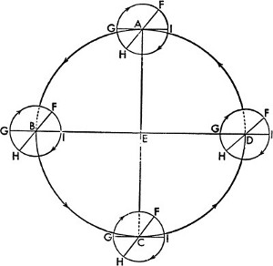

1. Evrenin Küre Şeklinde Olması
Evvela evrenin küre şeklinde olduğunu kabul etmeliyiz. Bu, ya tüm şekiller içinde en kusursuzu, yapısında hiçbir noksanlık taşımayan, tam anlamıyla eksiksiz olan kürenin biçiminden; ya tüm şekiller içinde en uygununun küre olmasından ve doğal olarak her şeyi içine alıp muhafaza edebileceğinden; ya evrendeki bütün kütlelerin –Güneş'i, Ay'ı, gezegenleri ve yıldızları kastediyorum– tümüyle küre şeklinde olmasından; su damlalarında ve diğer akışkan maddelerde görüldüğü gibi kendi başlarına hareket etmek istediklerinde küreye dönüşmeye meyilli olmalarından ötürü böyledir. Böyle bir şeklin göksel cisimlere yakıştırılmış olmasından kimse kuşku duymaz.
2. Dünya'nın da Küre Şeklinde Olması
Her tarafından merkeze doğru eğimli olduğundan Dünya da küre şeklindedir. Her ne kadar tepelerin yükseltileri ve vadilerin derinlikleri içinde küreymiş gibi görünmese de bunlar Dünya'nın yuvarlaklığına pek etki etmez. Bu durum şöyle açıklanabilir: Bir noktadan kuzeye doğru gidildiğinde, günlük devinim doğrultusunun kuzey ucu yavaş yavaş yükselir, ötekiyse aşağıya doğru aynı şekilde hareket eder. Kuzeyde yer alan birçok yıldızın hiç batmadığı; güneydeki birçok yıldızınsa artık hiç yükselmediği görülür. Bu yüzden Canopus[39], İtalya'da görünmezken, Mısır'da açık seçik ortadadır. İtalya Fluvius'un son yıldızını[40] bilirken, soğuk bölgemiz onu tanımaz bile. Güneye gidildiğindeyse bunun aksine, kuzeye gidenlerin artık göremediği yıldızlar yükselirken, bizim yüksekte gördüklerimiz alçalır. Dahası kutupların eğimleri, Dünya'nın kutuplara eşit mesafedeki her noktasında aynı orana sahiptir ve bu durum, küre dışındaki başka hiçbir şekil için geçerli değildir. O halde Dünya'nın bu uç noktalar arasında yer aldığı ve bu yüzden küre şeklinde olduğu açıktır. Şunu da ekleyin: Akşama doğru meydana gelen Güneş ve Ay tutulmalarını doğudakiler, sabah tutulmalarını ise batıdakiler görmez. Arada meydana gelen tutulmaları ise doğudakiler daha erken, batıdakiler daha geç görür. Su yüzeyinde de durumun aynı olduğu gemiciler tarafından tespit edilir. Örneğin kara parçası geminin güvertesinden henüz görülmemişken gemi direğinden görülebilir. Yine gemi kıyıdan ayrılırken karada kalanlar, gemi direğinin tepesinde asılı duran bir şeyin, tümüyle gözden yitene kadar yavaş yavaş alçaldığına şahit olur. Su da doğası gereği –tıpkı toprak gibi– her daim alçak yerlere meyleder; kıyının dışbükeyliğinin müsaade ettiğinden daha yukarı çıkamaz. Bu da karaların okyanus sularından çok daha yüksek olmasının sebebidir.
3. Karalar ve Denizler Nasıl Tek Bir Küre Oluşturur?
Sularını fark gözetmeksizin her tarafa akıtan okyanuslar derin çukurları da doldurur. Su yeryüzünü tümüyle yutmasın ve canlıların esenliği için karaların bir kısmı kalsın da buralarda adalar oluşabilsin diye, her biri kendi ağırlığıyla aynı merkeze yönelen suların karalardan daha az olması gerekiyordu. En nihayetinde bir kıta –hatta bütün anakaralar– geniş bir adadan başka nedir ki?[41] Dünya'daki tüm suların, karalardan on kat daha fazla hacimli olduğunu söyleyen kimi Peripatetikleri de[42] dinlememek lazım. Elementlerin dönüşümü sırasında bir parça topraktan on parça su oluştuğunu tahmin eden Peripatetikler, bunu şöyle izah ediyor: Toprak ağırlığı her yerde aynı değildir, onun oluşturduğu yüksek yerlerin içinde büyük boşluklar da olabileceğinden, ağırlığın merkezi başka, büyüklüğün merkezi başkadır. Fakat geometri cahili oldukları için yanılıyorlar; toprağın yedi katı kadar su olduğunda karaların bir parçasının bile kuru kalmasının mümkün olamayacağından habersizler. Bunun mümkün olabilmesi için toprağın ağırlık merkezini terk etmesi ve –sanki o kendisinden daha ağırmış gibi– suya yer açması gerekir. Zira kürelerin hacimleri çaplarının küpüyle orantılıdır. O halde yedi parça su ve bir parça toprak olsaydı, karaların çapı suyun oluşturduğu kürenin yarıçapından daha fazla olamazdı; bu yüzden su hacminin on kat daha fazla olması hiç akla yatkın değildir. Yerin ağırlık merkeziyle çekim merkezi arasında bir fark olmadığı, okyanuslardan dışa doğru yükselen karaların sürekli olarak genişlememesinden de anlaşılabilir. Yoksa deniz suları toprakla kaplanır ve içdenizlerle büyük körfezlerin oluşumuna müsaade etmezdi. Dahası, kıyılardan okyanusun derinliklerine doğru gidildikçe artış durmaz; gemiciler uzun yolculukları sonunda ne bir adaya, ne bir kayalığa ne de herhangi bir toprak parçasına varabilirdi. Oysa gayet iyi biliyoruz ki Mısır Denizi'yle Kızıldeniz arasında neredeyse 15 stadium[43] kadar bir toprak parçası vardır. Oysa bunun tam aksine, Ptolemaeus[44] Cosmographia'sında üzerinde yerleşimin olduğu karaları –bilinmeyen bir kara parçasını da içine alarak– orta çembere kadar genişletiyor; son keşiflerin Kuzey Çin'i ve 60º boylamına kadar olan toprakları içine alarak kapsadıkları bölgeleri dışarıda bırakıyordu. Oysa yaşanabilir topraklar artık okyanusun geri kalanının ulaştığı boylamdan da öteye genişlemiş durumda. Bunlara İspanya ve Portekiz krallarının zamanımızda keşfettiği adaları, özellikle de onu bulan geminin kaptanının adının verildiği, ölçülemez büyüklüğünden ötürü kendisine ikinci bir orbis terrarum[45] denen Amerika'yı[46] ve bugüne kadar hâlâ bulunamamış olan diğer birçok adayı da eklediğinizde; bu kara parçalarının da karşı tarafında bulunan karaların ve karşıt ülkelerin ortaya çıkmasına pek şaşırmamalıyız. Zaten geometrik akıl yürütme bizi Amerika'nın Hindistan'daki Ganj Havzası'nın tam karşıt konumunda bulunduğuna inanmaya mecbur kılıyor. Bütün bunlardan hareketle karaların ve denizlerin aynı ağırlık merkezine tabi olduğu kanaatini taşıyorum. Bu aynı zamanda yeryüzünün büyüklük merkezidir, zira toprak daha ağır olup, içindeki yarıklar da suyla dolmuştur. Bu sebeple de yüzeyde sular daha fazlaymış gibi görünse de karalarla karşılaştırıldığında denizler daha azdır. Bu yüzden karalar, bünyesindeki suyla beraber, gölgesinin de gösterdiği şekli taşıyor olmalıdır; zaten Ay tutulması sırasında tam da böyle bir çember ortaya çıkıyor. Dolayısıyla Dünya, Empedocles[47] ve Anaximenes'in[48] düşündüğü gibi düz, Leucippus'un[49] ileri sürdüğü gibi davul şeklinde, Heracleitus'un[50] iddia ettiği gibi kâse şeklinde, Democritus'un[51] söylediği gibi ortası delik bir biçimde değildir. Ayrıca Anaximander'in[52] dediği gibi silindir veya Xenophanes'in[53] dediği gibi tabana doğru yoğunluğu artan bir koni şeklinde de değildir. Dünya, filozofların da düşündüğü gibi, kusursuz bir küredir.
4. Göksel Cisimlerin Hareketleri Düzenli, Daimi ve Daireseldir ya da Dairesel Hareketlerden Oluşur
Bütün bunlardan sonra, göksel cisimlerin hareketinin dairesel olduğunu aktaracağız. Zira kürenin hareketi dairesel dönme şeklindedir; gerçekleştirdiği bu eylem onun yalın ve olabilecek en basit biçimini ortaya koyar, hepsi birbirine benzeyen noktaları üzerinde ilerlerken ne başı ve sonu anlaşılabilir, ne de bunlar ayırt edilebilir. Fakat kürelerin veya yörünge çemberlerinin büyüklüğüne bağlı birçok hareket vardır. En bilineni de Yunanların Ó˘¯İÌÂÚÔÓ dediği, gündüzle gecenin toplam süresi kadar olan günlük devinimdir. Bu hareket sebebiyle Dünya'nın dışında kalan tüm evrenin doğudan batıya doğru döndüğü farz edilir. Günlerin sayısıyla zamanın ta kendisini hesaplayabildiğimiz için bu devinim, tüm hareketlerin genel ölçüsü olarak alınmıştır. Daha sonra Güneş'in, Ay'ın ve gezici yıldızların tam ters yöndeki, yani batıdan doğuya doğru olan devinimlerini görürüz. Böylece Güneş bize yılı; Ay ise en yaygın zaman dilimleri olan ayları verir; diğer beş gezegenin her biriyse kendi döngülerini takip eder. Ne var ki bu hareketler birçok yönden ilk hareketten farklıdır. İlk olarak bu gezegenler ilk hareketle aynı eksen etrafında dönmez; eğik ekliptiği takip eder. Sonra bu gezegenler kendi yörüngelerinde düzenli bir şekilde dönüyor gibi de görünmez. Güneş ve Ay'ın kimi zaman daha yavaş, kimi zaman daha hızlı hareket ettiği görülür. Beş gezici yıldızınsa bu iki hareket arasında bazen geriye doğru gittiğini bazen de durmaya yaklaştığını fark ederiz. Güneş'in her daim kendi rotasında dümdüz ilerlemesinin aksine, bunlar bazen güneye, bazen kuzeye saparak farklı yollarda hareketini sürdürür; zaten onlara bu yüzden "gezegenler" denmiştir. Şunu da eklemek gerekir ki Dünya'ya daha yakın olduklarında "yerberide", uzaklaştıklarında ise "yerötede" oldukları söylenir. Yine bu hareketlerin dairesel olduğunu ya da birçok dairesel hareketin birleşiminden oluştuğunu kabul etmeliyiz; hareketlerindeki düzensizlikler de kesin bir yasaya bağlı olup belli zamanlarda yinelenir. Zaten bu durum, gezegenlerin hareketleri dairesel olmasaydı söz konusu olamazdı. Öyle ki, geçmişteki konumuna geri dönebilen tek şekil çemberdir; örneğin Güneş, dairesel hareketlerden oluşan devinimiyle bize günlerle gecelerin eşitsizliğini ve yılın dört mevsimini sürekli geri getirir. Birçok devinim bu hareketle anlaşılabilir; zira basit yapılı göksel bir cismin düzensiz bir şekilde hareket edebilmesini tek bir küre sağlayamaz. Zira bu durum –ister cismin kendi doğasından isterse bir dış nedenden kaynaklansın– ya taşıyıcı gücün değişkenliğinden ya da kendisiyle taşınan cisim arasındaki eşitsizlikten meydana gelir. Her iki duruma da akıl sır erdirilemediğinden ve olabilecek en iyi sistem içindeki bu nesneler arasında böyle bir durumun söz konusu olduğunu düşünmek manasız olduğundan; –ya yörüngeleri farklı eksenlerden geçtiği için ya da Dünya, gezegenlerin yörünge çemberlerinin merkezinde yer almadığı için– göksel cisimlerin düzenli hareketlerinin bize düzensiz göründüğü kabul edilmiştir. Dünya'dan izleyen bizlere göründüğü kadarıyla, Optik'te de gösterildiği gibi, Dünya'dan farklı uzaklıklarda bulundukları için gezegenler yakın geçişlerde daha büyük, uzak geçişlerdeyse daha küçük görünür: Bu yüzden farklı uzaklıklarda görülen yörünge çemberinin birbirine eş yayları, aynı sürede kat edilse de eşit değilmiş gibi görünecektir. Bu nedenle her şeyden evvel yeryüzünün gökyüzüyle bağlantısı üzerinde dikkatle durmamız gerektiğini düşünüyorum; zira en yüksekteki nesneleri incelerken bize daha yakın olan nesneler hakkında cahil kalmamak ya da benzer şekilde Dünya'ya ait nitelikleri göksel cisimlere yüklememek gerekir.[54]
5. Dünya'nın Deviniminin Dairesel Olup Olmadığı ve Konumu Üzerine
Dünya'nın da küre şeklinde olduğunu gösterdikten sonra hareketinin de şekline uygun olup olmadığının ve evrendeki konumunun ne olduğu üzerinde durulması gerektiğini düşünüyorum. Bunlar bilinmeden göklerdeki işleyişe dair kesin bir çıkarım yapmak da mümkün değildir. Dünya'yı evrenin merkezine yerleştirme düşüncesi öyle hâkimdir ki, birçok düşünür aksi bir görüşün düşünülemez, hatta saçma olduğuna kati bir şekilde inanır. Bununla birlikte meseleyi dikkatle ele alırsak, sorunun henüz çözülmediğini ve bundan dolayı da hor görülmemesi gerektiğini göreceğiz. Konumda görünen her değişiklik, görünen nesnenin ya da görenin hareketine bağlı olarak veyahut kaçınılmaz bir biçimde her ikisinin eşit olmayan hareketiyle meydana gelir. Zira aynı yöne doğru eşit bir biçimde devinen nesneler arasında –yani görülen ile gören arasında– hareket algılanamaz. Dünya göksel devinimlerin gözlendiği, bakış açımızın şekillendiği yerin kendisidir. O halde Dünya'ya bir hareket atfediliyorsa, o hareket bizzat Dünya'nın dışındaki evrenden de görülmelidir; ancak bu, özellikle günlük devinimde olduğu üzere, ters istikametteymiş gibi görünecektir. Bu yüzden Dünya ve etrafındakiler dışında tüm evren dönüyormuş gibi görünür. Kaldı ki bu devinimle ilgili olarak gökyüzünün hiçbir hareketinin olmadığını, sadece Dünya'nın batıdan doğuya doğru döndüğünü kabul ederseniz; ciddi bir incelemeden sonra Güneş'teki, Ay'daki ve yıldızlardaki doğuş ve batışın da aynen bu şekilde gerçekleştiğini görebilirsiniz. Her şeyi kapsayan ve kaplayan, evrenin ortak mekânı olan gökyüzü söz konusu olduğundaysa; niçin kapsananlara değil de kapsayana ya da yer kaplayan nesnelere değil de onlara yer sağlayana hareket atfedildiğini kavramak kolay olmaz. Cicero'dan[55] öğrendiğimiz kadarıyla Pyhtagorasçı Heraclides[56] ve Ecphantus[57] ile Syracusalı Hicetas[58]; Dünya'nın evrenin merkezinde dönmekte olduğunu düşünmüş; yıldızların, Dünya'nın araya girmesiyle battığına, aradan çekilmesiyle de doğduğuna inanmıştı. Bu kabulle birlikte neredeyse herkes Dünya'nın evrenin merkezi olduğu savına sahip çıkmış ve buna inanmışsa da Dünya'nın konumuna dair aslında hiç de küçük olmayan başka bir problem de ortaya çıkmıştır. Biri çıkıp da Dünya'nın evrenin merkezinde veyahut ortasında bulunduğunu inkâr etse bile, yine de Dünya'nın sabit yıldızlar küresiyle olan mesafesinin karşılaştırma götürmeyecek kadar büyük olduğunu, ancak Güneş'in ve diğer gezegenlerin yörünge çemberleriyle karşılaştırılabilir bir mesafede bulunduğunu kabul etmek durumundadır. Nitekim aynı kişi, hareketlerin Dünya'nın değil de başka bir merkezin etrafında konumlandıkları için düzensiz göründüğünü düşünerek belki de düzensiz görünen harekete dair kusursuz bir neden de ortaya koyabilir. Bu yüzden gezici yıldızların bazen Dünya'ya yakın, bazen de ondan uzak görünmesi kaçınılmaz olarak Dünya'nın merkezinin yörünge çemberlerinin merkezi olmadığı sonucunu doğurur. Gezegenlerin mi Dünya'ya, yoksa Dünya'nın mı gezegenlere yakınlaşıp uzaklaştığıysa henüz belli değildir. Biri çıkıp da Dünya'nın günlük dönüşüne ilave olarak başka bir devinimden söz ederse bu hiç de şaşırtıcı olmayacaktır. Zira –Platon'un[59] yaşamını yazanlardan öğrenildiği kadarıyla– Platon'un onu görmek amacıyla İtalya'ya kadar gittiği, hiç de sıradan sayılamayacak bir matematikçi olan Pythagorasçı Philolaus'un,[60] Dünya'nın bir çember çizdiği ve başka birtakım hareketlerde de bulunduğunu düşündüğü dile getirilir. Buna karşın pek çok kişi, evrenin merkezinin sabit kalmasından ve ona en yakın cisimlerin de çok yavaş dönüyor olmasından hareketle, Dünya'nın aslında evrenin merkezi olduğunun ve tıpkı bir nokta gibi göklerin uçsuz bucaksızlığında merkezi teşkil ettiğinin geometrik bir akıl yürütmeyle kanıtlanabileceğine inanmıştır.[61]
6. Dünya'nın Büyüklüğüyle Karşılaştırıldığında Göklerin Uçsuz Bucaksızlığı Üzerine
Dünya'ya ait büyük kütlenin göklerin büyüklüğüyle karşılaştırılamayacağı ufuk çemberinin[62] (Yunanlar bunun için ŞÚı˙ÔÓÙ˜ tabirini kullanmıştır) bütün gökküreyi ikiye bölmüş olmasından anlaşılabilir; öyle ki Dünya'nın büyüklüğü göklerle karşılaştırılabilir ya da Dünya'nın evrenin merkezine mesafesi anlaşılabilir olsaydı, bu durum gerçekleşmezdi.
Bir küreyi kesen ve kürenin merkezinden geçen daire, bu küreyi çevreleyebilecek en büyük dairedir. ABCD, ufuk çemberi olarak alınsın; E, bizim görüş alanımızı temsilen Dünya ve sayesinde görülebilen yıldızların görülmeyen yıldızlardan ayırt edileceği ufkun merkezi olsun. E'ye yerleştirilmiş olan bir dioptra[63], horoskop[64] ya da mercek[65] sayesinde C noktasında doğan Yengeç'in başlangıcı ve tam o anda A noktasında Oğlak'ın batışının başlangıcı tespit edilsin. Dioptra yardımıyla AEC düz bir çizgi üzerinde yer aldığından, bu çizginin ekliptiğin çapı olduğu açıktır; zira altı burç, merkezi ufkunkiyle aynı olan –E olan– bir yarım çember çizer. Buna karşılık bir devinim meydana geldiğinde ve Oğlak'ın başlangıcı B'de yükseldiğinde; Yengeç'in batışı D'de görünecek; BED düz bir çizgi ve ekliptiğin[66] çapı olacak. Fakat AEC çizgisinin de aynı dairenin çapı olduğu görülmüştür; bu yüzden ortak kesitte E noktası bu ortak kesitin merkezi olacaktır. Böylelikle ufuk çizgisi, küredeki en büyük daire olan ekliptiği daima ikiye böler. Bir kürede bir çember, en büyük çemberlerden birini ikiye bölerse, bölen çemberin bizzat kendisi de en büyük çemberlerden biri olur; o halde ufuk çemberi de en büyük çemberlerden biridir. Her ne kadar Dünya'nın yüzeyinden çekilen çizgiyle Dünya'nın merkezinden geçen çizginin birbirinden farklı olması gerekiyorsa da Dünya'ya ilişkin bu çizgiler hesap edilemez ölçüde büyük olduğundan, sanki paralellermiş gibi görünür. Çünkü sonlandıkları noktaların pek uzakta olması, onları sanki tek çizgiymiş gibi gösterir ve aralarındaki mesafe –Optik'te de gösterildiği gibi– bu çizgilerin uzunluklarından ötürü anlaşılmaz düzeydedir. Kuşkusuz bu veri de Dünya'yla karşılaştırıldığında göklerin uçsuz bucaksızlığını ya da sınırsız büyüklüğünü, duyularımıza göre söyleyecek olursak Dünya'nın göklere kıyasla bir cismin tek noktası kadar olduğunu veyahut sınırsız büyüklükteki bir nesnedeki sınırlıyı temsil ettiğini ortaya koyar. Fakat bundan başka bir şeyin gösterilemediğini ve bunun da Dünya'nın evrenin merkezinde yer aldığını kanıtlamadığını görüyoruz. O halde, sadece küçük bir parçası olan Dünya döneceğine, böylesine büyük bir evrenin 24 saatlik bir zaman diliminde dönüyor olmasına daha fazla şaşırmamız gerekmez mi? Ayrıca merkezin hareketsiz olduğunu ve merkeze en yakın olanların en az hareket ettiğini söylemek de Dünya'yı evrenin merkezinde konumlandırmak anlamına gelmez. Bu, göklerin döndüğünün fakat kutup noktalarının durağan olduğunun ve onlara yakın yerlerin çok az devindiğinin söylenmesinden başka bir şey olmaz. Kutba daha yakın olduğu için küçük bir çember çizen Küçük Ayı takımyıldızının Kartal ve Köpek takımyıldızlarından çok daha yavaş hareket ettiği görülür. Bütün bu takımyıldızlar, devinme hızı kendi eksenine yaklaştıkça azalan ve böylece bütün parçalarının aynı hızla hareket etmesi mümkün olmayan tek bir küre üzerinde bulunur. Fakat yine de bu küreyi oluşturan parçalar, dönüşleri boyunca aynı mesafeyi kat etmeseler de aynı sürede turlarını tamamlar. O halde Dünya'nın, göksel kürenin bir parçası olarak merkeze yakın olanın daha az devinmesi hususunda göksel küreyle aynı biçimde ve hareket tarzında olduğuna dair iddianın kanıtı buradan kaynaklanmaktadır. Yani bir merkez değil de bir kütle olarak, göksel bir çembere göre daha küçük fakat onunkine benzer yaylar çizecektir. Bunun yanlışlığı gün gibi ortadadır; zira bu şekilde bir yerde sürekli geceyken, başka bir yerde sürekli gündüz olması gerekirdi; ayrıca bütünün ve parçanın hareketi bir ve birbirinden ayrılmaz olduğundan günlük doğuşlar ve batışlar da hiç gerçekleşmezdi. Tabiatın çeşitliliğiyle birbirinden ayrılan nesneler arasındaki oran o kadar farklıdır ki daha küçük bir yörüngeye kısılmış olanlar, daha büyük bir çember çizenlerden daha hızlı döner. Nitekim en uzak gezegen olan Satürn 30 yılda döner; Dünya'ya hiç şüphesiz en yakın olan Ay dönüşünü bir ayda tamamlar ve Dünya da bir gün ve bir gecelik bir sürede döner. Günlük devinim konusunda da benzer bir kuşku kendini gösterir. Yukarıda söylenenlerden sonra Dünya'nın pek kesin olmayan konumu da bir tartışma konusudur. Gerçekten de Dünya'nın büyüklüğüyle karşılaştırıldığında elimizde göklerin sonsuz olmasından başka hiçbir veri yoktur; bu enginliğin nereye kadar uzandığı neredeyse hiç belli değildir.
7. Eskiler Niçin Dünya'nın Evrenin Ortasında Bir Merkez Gibi Durduğunu Düşünmüştü?
Eski filozoflar farklı muhakemelerden hareketle Dünya'yı evrenin merkezine yerleştirme gayreti içine girdiler. En temel dayanakları da ağırlık ve hafiflik konusuyla ilgiliydi: Buna göre en ağır element topraktı ve ağırlığı olan her şey ona, yani en içteki merkeze doğru yönelirdi. Dünya, ağır nesnelerin –doğalarından ötürü– her yönden ve dik açıyla yüzeyine doğru düştüğü bir küre olduğundan; bu ağır nesneler yüzeyde durdurulmasalardı merkezde üst üste düşeceklerdi. Zira bir küreye teğet olan düzlemle dik açı yapan düz bir çizgi merkeze yönelir. Merkeze doğru yönelmiş bu nesnelerin orada durması gerekir. Böylelikle Dünya bütünüyle merkezde kalır ve üzerine düşen nesneleri tutarak ağırlığından ötürü hareketsiz durur. Bunu, devinmeyle ve devinimin doğasıyla alakalı başka bir muhakemeyle de kanıtlamaya girişmişlerdir. Aristoteles tek ve basit bir yapıya ait olan devinimin de basit olacağını; basit devinimlerin kiminin doğrusal, kiminin de dairesel olduğunu söylüyordu. Doğrusal olanlar da ya yukarıya, ya da aşağıya yönelikti. Bu yüzden basit yapıdaki devinim, ya merkeze –yani aşağıya– doğrudur, ya merkezden dışa –yani yukarıya– doğrudur, ya da merkezin çevresindedir –yani daireseldir. Ağır kabul edilen toprak ve suyun merkeze doğru, hafif kabul edilen hava ve ateşin merkezden dışa doğru hareket etmesi beklenir. O halde bu dört elemente doğrusal devinim, göksel cisimlereyse merkez etrafında dönme hareketinin yakıştırılması makul görülüyor. Aristoteles işte bunları söylüyordu. Ptolemaeus Alexandrinus ise, Dünya en azından günlük devinimini dönerek tamamlıyorsa, yukarıda söylenenlerin tam tersinin olması gerektiğini söylemişti. Dünya'nın çevresini 24 saatte kat edecek bu dönüşün aşırı ve karşı durulamaz hızda olması gerekirdi. Ancak ani bir devirle sarsılan nesnelerin bir araya gelmeye uygun nitelikte olmadığı; üstelik sıkıca bir arada tutulmuyorlarsa oluşturdukları birliğin de dağıldığı görülür. Şunu da söylemektedir: Bu şekilde dönen Dünya çok uzun zaman önce saçılarak göklerin de ötesine geçmiş olurdu ki bu kesinlikle saçmadır; bunun sonucunda canlılar ve diğer nesneler de kati suretle sabit kalamazdı. Dahası, dikey olarak düşmekte olan nesneler de inecekleri yere varamaz, kendilerinden beklenen doğrultuda da hareket edemezlerdi. Buna mukabil bulutların ve havada uçuşan her türlü nesnenin de her daim batıya doğru gittiğini görürdük.
8. Öne Sürülen İddiaların Yetersizliği ve Çürütülmesi Üzerine
Kuşkusuz bu ve benzeri gerekçelerle Dünya'nın evrenin merkezinde hareketsiz durduğunu ve bunun da kuşku götürmez olduğunu söyleyip duruyorlar. Biri çıkıp da Dünya'nın dönmekte olduğunu düşünse bile söz konusu devinimin şiddetli değil de doğal olduğunu söyleyebilecektir. Doğaya uygun olan nesneler, zorla meydana gelmiş nesnelerin tam tersi tepkiler verir. Zira üzerinde zor veya güç kullanılan nesneler uzun süre dayanamayıp mutlaka bozulmak durumundadır. Buna karşılık doğal olarak meydana gelen nesnelerse tümüyle düzgün ve olabilecek en iyi durumda korunurlar. Bu yüzden Ptolemaeus, Dünya'nın ve yeryüzündeki her nesnenin söz konusu devinim esnasında, sanattan veya insan zekâsının ürünü olan düşüncelerden çok farklı yapıdaki doğanın etkisiyle dağılıp gitmesinden boş yere endişe etmiştir. Mademki gökler Dünya'dan çok daha büyük ve buna mukabil çok daha hızlı hareket ediyor, o halde neden evrenle ilgili de aynı korkuya kapılmıyor? Acaba tarifi mümkün olmayan bir devinimin merkezden çekip aldığı uçsuz bucaksız gökler, eğer durursa yıkılacak şekilde yaratılmış olduğu için mi? Bu mantık geçerliyse, göklerin büyüklüğü sonsuzluğa uzanıyor olmalıdır. Zira ateşli bir güç sayesinde oluşan ve yukarıya gidildikçe hızı artan bu hareket sebebiyle gittikçe genişleyen gökler, 24 saat içinde dönüşü tamamlamak için daha hızlı dönmek durumundadır. Böylece sürat büyüklüğü, büyüklük de sürati sonsuza dek artırır. Oysa fizikçilerin genel kabulü, sonsuz olan bir şeyin kat edilemeyeceği veya hareket ettirilemeyeceği yönündeydi: Yani gökler mecburen hareketsiz kalacaktır. Fakat göklerin ötesinde başka bir kütlenin, bir yerin ya da bir boşluğun, yani hiçbir şeyin olmadığını; bu yüzden göklerin genişlemesinin de mümkün olamayacağını söylerler. O halde bir şeyin hiçlik tarafından sarılabiliyor olması gerçekten şaşırtıcıdır. Gökler sonsuz olsa ve sadece içindeki bir boşlukla sınırlansa, belki ötesinde hiçbir şey olmadığı daha kolay kabul edilebilir; çünkü büyüklüğü ne olursa olsun, yer kaplayan bir şey onun içinde olacak, buna karşılık kendisi hareketsiz kalacaktır. Zira evrenin sonlu olduğunu göstermeye çalıştıkları en temel kanıt devinimin kendisidir. Evrenin sonlu mu yoksa sonsuz mu olduğu tartışmasını fizikçilere bırakalım ve Dünya'nın iki kutup noktası arasında, küre şeklinde olduğunu kesinkes kabul edelim. O halde sınırları bilinmeyen ve bilinemeyecek olan evrenin tümünün Dünya'nın çevresinde kaymakta olduğunu düşünmek yerine Dünya'ya, küresel şekline uygun olarak bir devinim atfetmekten neden imtina edelim; neden onun günlük dönüşünün göklerde sadece bir görüntü, yeryüzündeyse bir hakikat olduğunu açığa vurmayalım? Bu durum benzer şekilde Vergilius'un Aeneas'ının sözlerinde de karşımıza çıkar: Ayrılıyoruz limandan; karalar, kentler çekiliyor ardımızdan.[67] Gemi dingin bir şekilde ilerlerken dışarıdaki her nesne, hareketin imgesinden ötürü gemidekilere hareket ediyormuş gibi görünür; hatta gemideki her şeyin öylece durduğunu düşünürler. Aynı şey Dünya'nın deviniminde de olur, sanki tüm evren onun etrafında dönüyor zannedilebilir. O halde havada uçuşan ya da yükselip alçalan bulutlar ve başka nesneler hakkında ne diyebiliriz? Kuşkusuz yeryüzü sadece kendisine bağlı olan su elementiyle değil aynı zamanda hatırı sayılır ölçüde hava parçasıyla ve kendisiyle yakından ilişkili nesnelerle birlikte aynı yere doğru hareket etmektedir. Çünkü Dünya'ya bitişik olan hava topraklı ve sulu bir karışımı içerdiğinden ya bizzat Dünya'nın da bağlı olduğu yasaya bağlıdır ya da sürekli olarak dönmekte olan Dünya'ya yakınlığından veyahut buna direnç gösterememesinden ötürü devinim gücü kazanmıştır. Yine şaşırtıcı bir biçimde havanın üst bölümünün de göksel devinimi izlemekte olduğunu söylüyorlar; zira Yunanlıların Cometae[68] veya Pogonia[69] adını verdikleri ve aniden beliren bu göksel nesneleri kanıt olarak gösterip bunların da tıpkı diğerleri gibi havanın en üst katmanında yer aldığını ileri sürüyorlar. Biz ise yeryüzüyle arasındaki uzak mesafeden ötürü havanın bu katmanının yeryüzüne özgü hareketin dışında kaldığını söyleyebiliriz. Bu nedenle toprağa yakın olan hava ve onda asılı olan nesneler, bir rüzgâr ya da başka bir kuvvetle oraya buraya itilmediği müddetçe durgun görünecektir. Zaten havadaki rüzgâr, denizdeki dalgadan başka nedir ki? Fakat alçalan ve yükselen nesnelerin hareketinin, evreninkiyle karşılaştırıldığında ikili yapıda olduğunu, yani düz ve dairesel bir kompozisyondan oluştuğunu kabul etmemiz gerekir.[70] Ağırlıklarından ötürü düşen nesneler, toprak içerdikleri için, kuşkusuz parçası oldukları bütünün niteliğini taşır. Benzer şekilde ateş içeren nesneler de yukarıya doğru bir güçle itilirler. Zira dünyaya özgü olan ateş bizzat dünyadaki nesnelerden beslenir ve alev de yükselen dumandan başka bir şey değildir. Ateşin özünde yayılacağı ortamı işgal etmek vardır ve bunu öyle bir güçle yapar ki hiçbir güç veya buluş, onun zincirinden kurtulup işini tamamlamasının önüne geçemez. Ateşin ilerleyişi merkezden dairenin çevresine doğru olur; bu yüzden herhangi bir kara parçası tutuştuğunda alevler ortadan kenarlara doğru hareket eder. Buna binaen doğal konumunu ve bütünlüğünü koruduğu müddetçe basit bir yapıya ait hareketin de basit olacağını söylüyorlar – bu ilk olarak dairesel harekette kanıtlanmıştı. Gerçekten de bu noktada, bütünüyle kendi içinde kalan dairesel bir hareket yapar ve duruyormuş gibi gözükür. Doğal konumundan ayrılan, itilen ya da bir şekilde kendisi olmaktan çıkan nesnelere bir de doğrusal hareket eklenir. Bütünün düzeninde ve evrenin biçiminde kendi konumunun dışına çıkacak kadar tutarsız hiçbir şey yoktur. O halde doğrusal hareket, olması gerektiği yerde olmayan ve doğaya kusursuz bir biçimde uymayan –bütünden ayrılmış ve birliğini yitirmiş– nesnelere aittir. Özellikle de aşağı veya yukarı doğru hareket ettirilen nesnelerin –dairesel hareketi göz ardı etsek bile– basit, sıradan ve düzenli bir hareketi olmaz. Zira hafifliklerinden ya da ağırlıklarının etkisinden ötürü dengede kalamazlar. Düşmekte olan nesnelerse başlangıçta yavaş hareket ederken, düşme esnasında iyiden iyiye hızlanır. Buna karşılık dünyaya özgü olan ateşin –bundan başka bir şey bilmiyoruz– yukarıya doğru yükseldikçe, sanki dünyaya özgü maddenin gücünden etkilenerek zayıfladığını fark ederiz. Dairesel devinim sürekli devam eder, çünkü bitmez tükenmez bir kaynağı vardır; doğrusal devinimse ivmesini kaybeder, çünkü nesneler yerlerine ulaşınca ağırlıkları ya da hafiflikleri kalmaz, hareketleri sona erer. O halde, dairesel devinim bütüne özgüyken parçaların devinimi doğrusal olduğundan, dairesel devinimin doğrusal devinime tahammül ettiğini söyleyebiliriz. Kuşkusuz Aristoteles'in merkezden kaynaklanan, merkeze yönelen ve merkezin etrafında dönen olmak üzere üç farklı türe ayırdığı basit yapılı devinim düşüncesini olanca sadeliğiyle değerlendirmek gerekir. Tıpkı biri olmadan diğerinin varlığı da mümkün olmayan çizgi, nokta ve düzlemi birbirinden ayırabildiğimiz gibi. Bunlara ek olarak hareketsizlik durumu, değişim ve hareketlilikten daha soylu ve daha kutsal sayıldığı için, evrenden ziyade Dünya'ya yakıştırılır. Ancak bunun, sarılana ve kuşatılana –yani Dünya'ya– değil de her tarafı sarana ve kuşatana –yani evrene– bir devinim atfetmenin yeteri kadar saçma olduğunu eklemek istiyorum. Son olarak gezegenler Dünya'ya bazen yakın bazen uzak oldukları için, kimilerinin[71] Dünya olarak görmek istediği merkezin çevresindeki onlara ait devinimlerle merkezden çevreye ve çevreden merkeze doğru olan devinimler hep tek bir kütleye aittir. Bu yüzden merkezin çevresindeki devinimi daha genel olarak kabul etmek ve her devinimin kendine özgü bir merkezi varsa bunu yeterli görmek gerekir. Bütün bunlardan sonra –özellikle de Dünya'ya özgü olan günlük devinim yüzünden– Dünya'nın hareketsiz durmak yerine hareket ediyor olmasının daha makul olduğunu görüyorsunuz.
9. Dünya'ya Çeşitli Devinimlerin Atfedilmesine ve Evrenin Merkezine Dair
O halde Dünya'nın hareketliliğini engelleyen bir şey olmadığına göre Dünya'nın gezegenlerden biri olarak değerlendirilebilmesi için ona çok sayıda devinim yakıştırılıp yakıştırılamayacağını incelememiz gerektiğini düşünüyorum. Gezegenlerin görünen düzensiz hareketleri ve Dünya'dan farklı uzaklıklarda, merkezi Dünya olmayan çemberlerde geziniyor oluşları, gezegenlerin dairesel hareketlerinin merkezinin Dünya olmadığını ortaya koymaktadır. O halde birçok merkez bulunduğundan, bir kişinin evrenin merkezinin Dünya'nın çekim merkezi olup olmadığına dair kuşkuya kapılması hiç de çılgınca değildir. Kanımca çekim veya ağırlık, bir birlik ve bütünlük içinde kalabilsinler ve kürenin şekline uygun olabilsinler diye, evrenin tanrısal iradesi tarafından nesnelere bahşedilen doğal bir eğilimden başka bir şey değildir. Bu eğilimin Güneş, Ay ve diğer parlak gezegenler için de geçerli olduğuna inanılabilir; her ne kadar dairesel hareketlerini farklı yollarla tamamlıyorlarsa da bu eğilimin etkisiyle görülebildiği kadarıyla küre şeklinde kalabiliyorlar. O halde yeryüzü de tabi olduğu merkeze göre farklı hareketler yapıyorsa; bu hareketler bizim başka göksel kürelerde gördüklerimiz gibi, yıllık dönüşü de içinde barındıran hareketler olmalıdır. Yıllık devinim Güneş'ten alınıp Dünya'ya atfedilse ve Güneş'in hareketsiz olduğu düşünülse; burçların ve –aynı zamanda sabah ve akşam yıldızları olarak görünen– sabit yıldızların doğuş ve batışları yine aynı şekilde görünecektir. Gezici yıldızların duruşları, gerileyişleri ve ilerleyişleri kendilerinden değil Dünya'dan kaynaklanacak; görünümlerini bu hareketten edineceklerdir. Sonuç olarak Güneş, evrenin merkezi olarak düşünülecektir. Bunun yanında her şey tabi olduğu sistemin mantığına uygun olarak işler ve tüm evrenin uyumu her şeyi önümüze koyar; yeter ki –dedikleri gibi– meseleye iki gözümüzle bakalım.[72]
10. Göksel Kürelerin Düzeni Üzerine
Görünen tüm nesnelerin en üstünde sabit yıldızlar küresinin bulunduğundan kimsenin kuşkusunun olmadığını biliyorum. Eski filozofların, gezegenlerin düzenini devinimlerinin büyüklüğüne göre ayarlamak istediklerini gördük; burada işletilen mantığa göre, eşit hızda devinen nesnelerden daha uzakta olanlar daha yavaş deviniyor gibi görünür, tıpkı Euclides'in[73] Optik'te gösterdiği gibi. Buna bağlı olarak Ay'ın çok kısa bir zaman aralığında döndüğünü de düşünüyorlardı; zira onlara göre Ay, Dünya'ya en yakın cisim olarak en küçük yörünge çemberinde dolanmaktaydı. En uzun sürede en büyük çemberi çizen Satürn ise en uzaktaydı. Onun altında Jüpiter ve devamında da Mars vardı. Venüs ve Merkür hakkındaysa farklı görüşler dile getirilmişti; zira onların Güneş'ten açısal uzanımları diğer gezegenlerinkinden farklılık gösteriyordu.[74] Bu yüzden bu gezegenleri kimileri Platon'un Timaeus'unda[75] olduğu gibi Güneş'in üstüne; kimileri de Ptolemaeus[76] ve çağdaşlarının büyük bir bölümünün yaptığı gibi Güneş'in altına yerleştiriyordu. Alpetragius[77] Venüs'ü Güneş'in üstüne, Merkür'ü ise altına koyuyordu. Bu sebeple Platon'un izinden gidenler, aslında karanlık cisimler olan gezegenlerin Güneş'in ışığını yansıttığını düşünmüştür; bu gezegenler Güneş'in altında yer alsaydı, onun kadar olmayan büyüklükleri yüzünden yarım ya da kısmi daireler olarak görünürdü. Öyle ki yeniayda ve dolunayda gördüğümüz gibi, gezegenler aldıkları ışığı yukarıya, yani Güneş'e doğru yansıtırlar. Ayrıca bu gezegenlerin araya girmesiyle Güneş tutulmasının muhakkak gerçekleşeceğini ve büyüklükleri nispetinde de Güneş ışığını keseceklerini söylüyorlar. Fakat bu durum hiç gerçekleşmediğinden bu gezegenlerin asla Güneş'in altında bulunamayacağını düşünüyorlar.[78] Buna karşılık Venüs ve Merkür'ü Güneş'in altına yerleştirenler, Güneş ile Ay arasındaki mesafenin büyüklüğünü iddialarına kanıt olarak görüyor. Onlara göre Dünya'nın yarıçapı bir birim ve Güneş ile Dünya arasındaki en kısa mesafe bunun 18 katı kadarken, Ay'ın Dünya'dan en uzak mesafesini 64 1/6 birim olarak hesaplıyorlar. Bu durumda Güneş'le Dünya arasındaki mesafe 1160 birim ve Güneş'le Ay arasındaki mesafe de 1096 birimdir. Sonuçta bu kadar büyük bir mesafenin boş kalmaması adına, kürelerin kalınlığından ötürü yeröteler ile yerberiler arasındaki sürelerin de aynı toplamı verdiğini söylüyorlar. Bu yüzden Ay'ın yerötesini Merkür'ün yerberisi, Merkür'ün yerötesini Venüs'ün yerberisi izliyor ve son olarak Venüs'ün yerötesi de neredeyse Güneş'in yerberisine dokunuyor. Merkür'ün yerberisiyle yerötesi arasında yaklaşık 177 1/2 birimlik bir mesafe olduğunu hesaplıyorlar ve geri kalan boşluğu da neredeyse tümüyle Venüs'ün yerberisiyle yerötesi arasındaki 910 birimle dolduruyorlar. Bu yüzden bu gezegenlerin Ay gibi saydam olmadığını, her birinin ya kendisine ait bir ışıkla ya da Güneş'ten aldığı ışıkla dolup taştığını, bu sebeple Güneş'in önüne de geçmediklerini, çünkü Güneş'in hizasından uzakta durdukları için Güneş'le görüş açımızın arasına girmelerinin pek sık görülebilecek bir olay olmadığını kabul ediyorlar. Dahası, bunlar Güneş'e kıyasla daha küçük cisimlerdir ve tıpkı Güneş'in çapının Venüs'ünkinden on kat daha büyük olduğunu düşünen Machometus Arecensis'in[79] söylediği gibi, Venüs Merkür'den daha büyük olmasına rağmen Güneş'in 1/100'ünü bile kapatamaz. Bu yüzden böylesine görkemli bir ışık bütünü içinde zayıf bir lekenin görünmesi kolay değildir. Yine de Averroes,[80] Ptolemaeus kayıtları üzerine yapmış olduğu bir çalışmasında, önceden hesapladığı Güneş ve Merkür kavuşumunu gözlemlerken bir kararma gördüğünden bahseder. Bütün bunlardan sonra bu iki gezegenin Güneş küresinin altında hareket ettiği sonucuna varırlar. Oysa bu temellendirmenin zayıf ve güvenilmez olduğu, Dünya'nın yarıçapı 1 birim alınırsa Ay'ın en kısa uzaklığının 38 birim olmasından da anlaşılabilir. Fakat Ptolemaeus'un daha gerçekçi bir değerlendirmesine göreyse bu uzaklık –aşağıda gösterileceği gibi– 49 birimden fazladır. Ancak bu büyük boşluğun havadan –ya da dilerseniz buna ateşsi element de denebilir– başka bir şey içerip içermediğini bilmiyoruz. Yeri geldiğinde de gösterileceği gibi, Venüs'ün Güneş'in her iki yanında yaklaşık 45° açı yapması nedeniyle, dış tekerleme eğrisinin çapının Dünya'nın merkeziyle yerberideki Venüs arasındaki mesafeden altı kat daha büyük olması gerekir.[81] O halde Dünya'yı, havayı, eteri, Ay'ı ve Merkür'ü içinde barındıran alandan daha büyük olan, muazzam uzay boşluğuna dair ne diyecekler? Yine hareketsiz bir Dünya'nın etrafında dönmekteyse, Venüs'ün o koca dış tekerleme eğrisi nerede yer alacak? Ptolemaeus'un, Güneş'e yaklaşan ve Güneş'ten uzaklaşan yıldızların arasında devinmesinin gerekliliğine dair söz konusu temellendirmesi pek ikna edici değil; zira Ay çeşitli biçimlerde devinerek bu temellendirmenin yanlışlığını ortaya koymaktadır. Fakat Venüs'ü ve Merkür'ü Güneş'in altına yerleştirenler ya da bunları Güneş'ten başka bir düzenle ayıranlar, hızlılıkları veya yavaşlıkları da düzeni bozmadıkça diğer gezegenler gibi ayrı ve Güneş'ten farklı çemberler çizmeyen bu gezegenlerin durumunu ortaya koyabilmek adına acaba hangi nedene sarılacak?[82] Buna göre Dünya'nın ya yıldızların ve onların yörüngelerinin merkezi olmaması, ya kesin olarak böylesi bir dizilim mantığının olmaması, ya da Satürn'e Jüpiter'den daha yüksek bir konum verilmemesi gerekecektir. Bu yüzden Encyclopaedia'nın yazarı Martianus Capella[83] ve başka Latin yazarlarının söylediklerinin es geçilmemesi gerektiğini düşünüyorum. Venüs ile Merkür'ün merkezde bulunan Güneş'in çevresinde dönmekte olduğunu, bu yüzden bu iki gezegenin Güneş'ten uzanımlarının yörünge çemberlerinin eğriliğinin sağladığından daha fazla olmadığını belirtiyorlar. Dahası diğerlerinin yaptığı gibi Dünya'nın etrafında çember çizmiyorlar, aksine sabit yıldızlar küresinde yer değiştiren yerötelere ve yerberilere sahipler. Bu yazarlar bu gezegenlere ait kürelerin merkezinin Güneş'in etrafında olduğundan başka neyi anlatmaya çalışıyor? Buna göre Merkür'ün çemberi, kendisinin iki katından daha büyük olduğu düşünülen Venüs'ün çemberinin içinde kendisine yetecek kadar bir alan bulacaktır. Birisi bunu fırsat bilip, Satürn'ü, Jüpiter'i ve Mars'ı da aynı merkezle ilişkilendirip onlara ait çemberlerin büyüklüğünü bu yıldızlarla birlikte içerideki Dünya'yı da kapsayacak kadar büyük düşünürse yanılmış olmayacak. Devinimlerinin düzenli ardışıklığının gösterdiği de tam budur. Gerçekten de bu yıldızlar her daim akşam yükselişi esnasında, yani Güneş'in karşısına geçtiklerinde ve Dünya onlarla Güneş arasına girince Dünya'ya daha yakın görünürler. Akşamki batışlarındaysa, yani Güneş onlarla Dünya arasına girdiğinde ve Güneş'in etrafında görünmediklerindeyse Dünya'dan en uzak konumda bulunurlar. Tüm bunlar bu gezegenlerin merkezinin Güneş olduğunu ve yine bunun Venüs ve Merkür'ün bağlandığı merkezle aynı olduğunu ziyadesiyle kanıtlar.[84] Fakat bütün bunların tek bir merkeze bağlı olması yanında Venüs'ün dışbükey yörünge çemberi ile Mars'ın içbükey yörünge çemberi arasındaki boşluğun onlarla eşmerkezli bir yörünge çemberi ile tamamlanması, buraya uydusu Ay ve Ay küresinin altındaki her şeyle birlikte Dünya'nın yerleşmesi gerekir. Kuşkusuz Ay'ı, en yakınında bulunan Dünya'dan hiçbir suretle ayıramayız; zira uzayda ona uygun ve ziyadesiyle yetecek olan yeri biliyoruz. En nihayetinde, Ay'ı da içine alan toplamıyla birlikte Dünya'nın merkezinin de diğer gezici yıldızlar gibi Güneş'in etrafında büyük bir çember çizerek yıllık dönüşünü tamamladığını ve evrenin merkezinin de bizzat Güneş olduğunu hiç çekinmeden söyleyebiliriz. Ayrıca Güneş'in tamamen hareketsiz durduğunu ve onun görünen deviniminin, Dünya'nın deviniminden kaynaklandığını eklemek isterim. Evren öyle büyüktür ki, Dünya'nın Güneş'ten uzaklığı, diğer gezici yıldızlarla karşılaştırıldığında önemsiz değilse de; sabit yıldız kürelerininki yanında fark edilemez ölçüdedir. Öyle ki Dünya'yı merkeze yerleştirip neredeyse sonsuz sayıdaki kürenin çokluğuyla meseleyi karmakarışık bir hale getirmektense bu düşüncenin daha kabul edilebilir olduğu kanısındayım. Fakat ziyadesiyle doğanın bilgeliğini izlemek gerekir; o gereksiz ve yararsız bir şey üretmekten kaçındığı gibi çoğu kere tek bir nedeni birçok etkiyle sonuçlandırır. Her ne kadar bütün bunlar zor, kavranması güç ve hatta pek çoklarının görüşüne aykırı da olsa Tanrı'nın izniyle bunları matematik ilmine yabancı olmayanlar için gün gibi açık hale getireceğiz. İlk yasanın hâlâ geçerli olduğunu düşünürsek –gerçekten de kimse kürelerin büyüklüklerini zamanın fazlalığını geçen süreyle ölçmekten daha uygun bir öneri sunamayacaktır– kürelerin düzeni en dıştakinden itibaren şu şekildedir: Hepsinden önce ve en üstte yer alan, kendisiyle birlikte her şeyi içeren sabit yıldızlar küresidir ve hareketsizdir. Diğer bütün yıldızların konumunun ve hareketinin ona göre belirlendiği, evrenin alanıdır. Kimilerinin niçin onun bir şekilde hareket ediyormuş gibi göründüğünü düşündüğünü, Dünya'ya özgü hareketin nedenine değinirken açıklayacağız. Ondan sonra dönüşünü 30 yılda tamamlayan, gezegenlerin ilki, yani Satürn gelir. Daha sonra 12 yıllık dönüş süresiyle Jüpiter, sonra da iki yılda bir dönüş yapan Mars gelir. Bir yılda tamamladığı dördüncü dönüş ise, dış tekerleme eğrisine benzediğini söyleyebileceğimiz bir yörünge çemberine sahip Ay küresiyle Dünya'ya aittir. Beşinci sırada, dönüşünü dokuz ayda tamamlayan Venüs vardır. Merkür, altıncı sırayı 80 günlük dönüşüyle alır. En nihayetinde bütün bunların merkezinde Güneş bulunur.
Zaten bu güzeller güzeli tapınaktaki ışığı, her yeri aynı anda böylesine aydınlatabilen buradan başka ve daha iyi bir yere kim yerleştirebilir ki? Gerçekten de evrenin bu aydınlatıcısına kimisinin akıl, kimisinin de kılavuz demesi boşa değildir. Trimegistus[85] onu görünen Tanrı, Sophocles'in Electra'sı ise her şeyi gözetleyen[86] olarak betimlemiştir. Güneş sanki kral tahtında oturuyormuş gibi etrafında dönen yıldızlar ailesini yönetir.[87] Dünya da Ay'la olan münasebetinde hiç aldatılmaz; aksine Aristoteles'in Canlılar Üzerine'de dediği gibi Ay da Dünya'yla çok yakın bir ilişki içindedir. Güneş tarafından yüklenen Dünya her yıl gebe kalır. Böylece bu düzende, evrenin başka hiçbir yerde rastlanamayacak takdir edilesi simetrisini veya kürelerin büyüklüğüyle devinimin kesin uyumunu buluyoruz. Gerçekten de dikkatle inceleyen biri Jüpiter'in ileri ve geri gidişlerinin Satürn'ünkinden daha büyük; Mars'ınkinden daha küçük olmasını ve yine Venüs'te Merkür'ünkinden daha büyük görünmesini anlayabilir. Dahası Satürn'deki bu karşılıklı hareketlerin niçin Jüpiter'dekinden daha sık, Mars ile Venüs'teyse Merkür'dekinden daha ender görüldüğünü; Satürn'ün, Jüpiter'in ve Mars'ın karşı konumlarda, kaybolma ve yeniden doğuşlardakine göre Dünya'ya daha yakın göründüğünü de bilebilir. Özellikle de Mars tüm gece boyunca ışıldadığında sanki Jüpiter'le aynı boyuttaymış gibi görünür; sadece renginin kızıllığıyla ondan ayrılır. Oysa büyüklük bakımından ancak ikinci yıldızlar arasında yer alır ve devinimi dikkatli bir gözlem sayesinde bilinebilir. Bütün bunlar hep aynı nedenden, Dünya'nın deviniyor olmasından kaynaklanır. Bu hareketlerden hiçbirinin sabit yıldızlarda görülmemesinin nedeni, aşırı uzaklıklarından ötürü onlara ait devinimlerin gözden kaçmasıdır. Öyle ki optikte de gösterildiği gibi, görülebilir her nesnenin seçilemeyeceği daha uzak bir nokta vardır. Yıldız ışıklarının titremesi, en uzaktaki gezegen olan Satürn'le sabit yıldızlar küresi arasında çok büyük bir mesafe olduğunu gösterir. Bu özellik sayesinde bu yıldızlar gezegenlerden ayrılabilir; zira hareket edenle etmeyen arasındaki fark çok büyük olmalıdır. Kuşkusuz O tanrısal iş öyle yüce, öyle büyük ki!
11. Dünya'nın Üç Devinimine Dair Kanıt
Dünya'nın hareketini, gezici yıldızlara ait bunca kanıt da desteklediği için şimdi bu devinimin bir özetini ortaya koyacağız. Böylelikle bir bütün halinde kabul edilmesi gereken üçlü devinim hipotezi de anlaşılır olacak. Bu hareketlerin birincisi –önceden de belirttiğimiz gibi Yunanlar tarafından Ó˘¯ËÌğÚÈÓÔÓ denilen– Dünya'nın gece ve gündüz boyunca dönüşüdür. Bu, kendi ekseni etrafında batıdan doğuya doğru gerçekleşir ve bu yüzden evren sanki aksi yönde hareket ediyormuş gibi algılanır. Bu da kimilerinin Yunanların åÛËÌğÚÈÓÔ˜ vurgusuna öykünerek aequadialis dediği ekvatoru veya ekinoks çemberini açıklar. İkinci hareketse Dünya'nın aynı şekilde Güneş'in çevresinde batıdan doğuya doğru burçlar kuşağını takip ederek çizdiği ve Venüs ile Mars arasında kendine eşlik eden kütlelerle birlikte izlediği, merkezin etrafındaki yıllık devinimdir. Bu yüzden sanki Güneş tutulum çemberini aynı devinimle takip ediyormuş gibi görünür. Örneğin nasıl ki Dünya'nın merkezi Oğlak'tan geçerken sanki Güneş Yengeç'ten geçiyormuş gibi görünüyorsa, Kova'dan geçerken de Aslan'ı geçiyormuş gibi görünür. Dünya'nın ekvatorunun ve dönme ekseninin, tutulum çemberi ve düzlemine göre değişken bir eğime sahip olduğunun anlaşılması gerekir. Eğer sabit olsalardı ve Dünya merkezin çevresinde basitçe hareket etseydi, gündüz ve gece eşitliği gözlenemez, ya her daim yaz dönümü, ya kış dönümü, ya da ekinoks yaşanırdı veyahut yaz, kış ve diğer mevsimler hep aynı olurdu. Yıllık dönüş kapsamında ters yönde, yani merkezin hareketinin aksi yönünde üçüncü bir devinim daha vardır. Her ikisi de karşılıklı olarak neredeyse eşit ve birbirlerine zıt yönde olduklarından şu durum gerçekleşir: Dünya'nın dönme ekseniyle üstündeki en büyük paralel –yani ekvator– evrenin hemen hemen aynı bölgesine bakmakta olduğundan hareketsizmiş gibi görünür. Buna mukabil Güneş, sanki evrenin merkezi Dünya'ymışçasına Dünya'nın tutulum düzleminin üzerinde deviniyor gibi görünür. Dünya ile Güneş arasındaki mesafenin, sabit yıldızlar küresinin uzaklığıyla karşılaştırıldığında algılanması zor olduğunu da unutmamak gerekir. Bunlar, kendilerinden bahsetmekten ziyade göz önüne serilmesi gereken hususlar; o halde tutulum düzleminde Dünya'nın merkezinin yıllık rotasını gösteren bir ABCD çemberi çizelim ve merkezde Güneş'i temsilen E noktası olsun. AEC ve BED çaplarını çizerek çemberi dörde bölelim: A, Yengeç'in; B, Terazi'nin; C, Oğlak'ın; D de Koç'un başlangıç noktasını temsil etsin. İlk başta Dünya'nın merkezinin A'da olduğunu kabul edelim. Evvela A'nın etrafında Dünya'nın FGHI ekvatorunu çizeceğim; fakat tutulumla aynı düzlemde yer almayacak; yalnızca GAI çapı çemberlerin, yani ekvator ile tutulumun ortak kesişimi olacak. Bir de GAI'ya dik olarak FAH çapını çizelim; F, ekvatorun güney tarafındaki, H de kuzey tarafındaki eğimi olacak.

Bu durumda Dünya'dakiler, E merkezindeki Güneş'i Oğlak'taki kış gündönümü noktasında görecek; bu, Güneş'e doğru yer alan H'deki en büyük kuzey sapmasından kaynaklanmaktadır. AE çizgisine göre ekvatorun eğimi, EAH eğiminin açısıyla kapsanan mesafede, günlük devinimle ekvatora paralel olan kış dönencesini çizer. Şimdi Dünya'nın merkezi batıdan doğuya doğru ilerlesin; en büyük eğimin sınırı olan F de doğudan batıya doğru, B noktasında çemberlerin çeyrekleri birbirini kesene dek hareket etsin. Ayrıca EAI açısı, eşit devinimden ötürü, AEB'ye eşit olur ve sırasıyla FAH, FBH'ye; GAI da GBI'ya eşitlenir; yani çaplar her daim birbirine paralel kalır. Bunlar, yine sıkça dile getirildiği gibi, göklerin aşırı büyüklüğü sebebiyle eşitmiş gibi görünür. Böylece Terazi'nin başlangıç noktası olan B'den, E'nin Koç'ta olduğu görünecek; çemberlerin kesişim noktası ise tek bir GBIE düzleminde yer alacaktır. Buna göre günlük devinimin eğimi olmayacak, fakat her eğim ya bir yanda ya da çizginin diğer yanında olacaktır. Böylece Güneş, kısa süre içinde ilkbahar ekinoksunda görünecektir. Dünya'nın merkezinin aynı koşullarda biraz daha ilerlediğini düşünelim; bu hareket C'de yarım çember oluşturunca, Güneş Yengeç'in girişinde görünmüş olacaktır. Fakat ekvatorun güney eğimi olan F, Güneş'e doğru yönlenmiş olur; sonuçta Güneş kuzeyde, ECF eğiminin açısıyla orantılı olarak yaz dönencesine çapraz görünür. Buna mukabil F buradan hareketle üçüncü çember alanına doğru yönelince ortak GI kesitiyle ED çizgisi yine örtüşecektir; en nihayetinde Güneş, Terazi'de görülecek; sanki sonbahar ekinoksuna ulaşmış gibi olacaktır. Daha sonra HF, aynı süreç içinde yavaş yavaş Güneş'le karşılaşacak; böylelikle yolculuğa başladığımız en baştaki konumuna geri dönmüş olacaktır.
Başka bir yol niyetine, aynı düzlemdeki AEC hem tutulum düzleminin çapı olsun hem de bu düzleme dik çemberin ortak kesiti olsun. Bu çember üzerinde, A ve C'nin etrafında, yani Yengeç ve Oğlak'ta kutuplar boyunca her iki tarafa da Dünya küresini çizelim, bu da DGFI olsun; Dünya'nın ekseni DF, kuzey kutbu D, güney kutbu F, ekinoks çemberinin çapı da GI olsun. Bu durumda F, E'de bulunan Güneş'e döndüğünde ve ekvatorun eğimi IAE'ye göre kuzeye doğru olunca, KL çapında ve LI uzaklığındaki eksen çevresindeki hareket, ekvator çemberine paralel olarak görünür, yani Güneş Oğlak'taymış gibi algılanır.
Daha açık bir biçimde söylersek, eksen çevresindeki bu hareket, AE doğrultusunda, tepesi Dünya'nın merkezinde, tabanı ise ekinoks çemberine paralel bir çember olan konik bir yüzey oluşturacaktır. Karşı taraftaki C'de ise bütünüyle benzer bir seyirle tam tersi durumlar gerçekleşir. Bu nedenle birbirine zıt bu iki devinim, yani merkezle eğimin devinimi, Dünya'nın eksenini dengede kalmaya zorlar, hatta bütün bunları Güneş'e ait devinimlermiş gibi gösterir. Merkezin ve eğimin yıllık hareketlerinin neredeyse eşit olduğundan bahsettik; zira tümüyle eşit olsalardı, ekinokslar, gündönümleri ve tutulum düzleminin sabit yıldızlar küresine göre eğimi hiç değişmemek durumunda kalırdı. Fakat aradaki küçük farkın zamanla büyüdüğü görüldü: Ptolemaeus'tan günümüze kadar bu fark neredeyse 21° kadar artmıştır. Buna bağlı olarak kimileri sabit yıldızlar küresinin de hareket ettiğine ve bunun dışında bir de dokuzuncu küre bulunduğuna inanmaktadır. Bu da yetmediğinden daha sonraki yazarlar bir de onuncu küre eklemişse de bizim Dünya'nın devinimiyle varmış olmayı umduğumuz hedefe ulaşabilen olmamıştır. Bu devinimi bir başlangıç noktası ve bir hipotez olarak alıp başka şeyleri de bu sayede göstermeyi amaçlıyoruz.
12. Dairedeki Düz Çizgilerin Büyüklüğü Üzerine
Neredeyse tüm kitap boyunca yararlanacağımız kanıtlar, düz çizgilere ve yaylarla düzlemsel ve küresel üçgenlere dair olduklarından ve her ne kadar bunlar Euclides'in Elementler'inde etraflıca ele alınmışsa da yine de burada ihtiyaç duyduklarımızı –yani açılardan kenarların, kenarlardan açıların nasıl bulunacağını– içermediklerinden; açı, bağlayan düz çizgiyi; düz çizgi de açıyı vermezken açı gerekli değeri verebildiği için; bir yayı bağlayan düz çizgilerin bulunabileceği bir yöntem bulunmuştur. Bu çizgiler ya da kirişler sayesinde açıya karşılık gelen yayı veyahut tam tersine yay sayesinde düz çizgiyi –ya da açının belirlediği kirişi– belirlemek mümkündür. Buna göre Ptolemaeus'un az ve dağınık bir şekilde anlattığı bu çizgileri; düzlemsel ve küresel üçgenlerin kenarlarını ve açılarını incelememiz manasız değildir; bu sayede bütün bu sorulara birer cevap bulunmuş, aktarmaya çalıştığımız konular da daha açık hale getirilmiş olur. Matematikçilerin genel kabulüne uygun olarak dairenin çevresini 360ºye böleriz; eskilerse 120 parçalık bir çap düşünmüştü. Fakat bu çizgilere atfedilen rakamların çarpılmasında ve bölümünde dakikaların ve saniyelerin karmaşasından kurtulmak adına, ayrıca çizgilerin uzunlukları ve kareleri genelde ölçülemez olduğundan –Hint rakamları herkes tarafından kullanılmaya başlandıktan sonra– halefleri 1.200.000, 2.000.000 veya başka bir rasyonel sayıyı çap olarak almış. Bu matematiksel gösterim, Yunanca veya Latince rakamlarla yapılanlar gibi tüm gösterimlere, hesaplamanın her türüne uygun olması ve kullanım kolaylığı açısından kesin bir şekilde üstün gelir. Biz de bundan dolayı açık bir hatanın önüne geçebilmek adına çapı 200.000 birim olarak aldık. Zira bu hesaplamalarda rakamı rakamına hesaplama yapmaktansa yakın bir tahminde bulunmak yeterlidir. Fakat bunu, Ptolemaeus'u neredeyse aynen izleyerek, altı teorem ve bir problemle ortaya koyacağız.
Birinci Teorem
Bir çemberin çapının belirlenmesiyle; aynı çemberin çevrelediği üçgenin, dörtgenin, altıgenin ve ongenin kenarları belirlenir. Euclides'in Elementler'inde de gösterildiği gibi, merkezden hareketle yarıçap altıgenin bir kenarına, üçgenin kenarına çizilen kare altıgenin kenarına çizilen karenin üç katına, dörtgenin kenarına çizilen kare altıgenin kenarına çizilen karenin iki katına eşittir.[88] Uzunluk bakımından altıgenin bir kenarı 100.000; dörtgeninki 141.422; üçgeninki 173.205 birim olarak belirlenir.
Altıgenin bir kenarı AB olsun ve Euclides'in ikinci kitabının XI. veya altıncı kitabının XXX. bölümünde de geçtiği gibi C ortada ve en uç bir noktada AB'yi kessin ve en büyük parça, BD ile eşit uzunluktaki CB olsun. Bu durumda bütün ABD, en uçta ortalama oranla kesilecek; daha küçük BD kesiti ise çemberde çizilen ongenin kenarı; AB ise Euclides'in on üçüncü kitabının V. ve IX. bölümünde açıklandığı şekilde altıgenin kenarı olacaktır. Fakat BD şu şekilde verilir: AB, E'de ikiye bölünmüş olsun. Euclides'in aynı kitabının üçüncü bölümünden anlaşılabileceği gibi, EBD'nin karesi EB'nin karesinin 5 katına eşittir. EB'nin 50.000 birim olmasından hareketle EB'nin karesinin 5 katı bulunur. Buna göre EBD 111.803 birimdir. BD ise EBD'nin EB'den farkına, yani 111.803'ün 50.000'den farkına; yani 61.803 birime eşittir; bu da ongenin aranan kenarıdır. O halde gösterildiği gibi çemberin çapı verilince, aynı çemberde çizilen üçgenin, dörtgenin, beşgenin, altıgenin ve ongenin kenarları da bulunur.
Çıkarım
En nihayetinde bir yayı ayıran kiriş bulunduğunda, yarım çemberin geri kalan kısmını ayıran kirişin de bulunabileceği açıktır. Yarım çemberdeki açı dik olduğundan ve dik üçgenlerde dik açının gördüğü kirişteki kare –yani çapın üzerine çizilen kare– dik açıyı oluşturan kenarlardaki karelerin toplamına eşittir; o halde yayın 36ºsini ayıran ongenin bir kenarının, çap 200.000 birimken, 61.803 birim; yarım çemberin geri kalan 144ºsini ayıran kenarın ise 190.211 birim olduğu gösterilmiş olur. Çapın 117.557 birimine eşit olan ve 72ºlik yayı ayıran beşgenin kenarıysa 161.803 birimlik bir düz çizgidir ve çemberin geri kalan 108ºsini ayırır.
İkinci Teorem
Bir çember içine bir dörtgen çizilirse; köşegenler tarafından oluşturulan dikdörtgen, karşıt kenarlar çiftinin oluşturduğu iki dikdörtgene eşit olur. Bir çemberin içine ABCD dörtgenini çizelim; burada AC ile DB köşegenleri tarafından oluşturulan dikdörtgenin alanı, AB ile CD'nin ve AD ile BC'nin oluşturduğu dikdörtgenlerin alanına eşittir, demek istiyorum.[89]
Buna göre ABE açısı CBD açısına eşit olsun. O halde EBD açısının her ikisinde de ortak olduğu ABD açısı ile EBC açısı eşit olur. Dahası, ACB açısı da BDA açısına eşittir; zira çemberin aynı kesitindedirler ve böylece iki benzer üçgen olan BCE ile BDA'nın orantılı kenarları ortaya çıkar. Buna göre BC'nin BD'ye oranı, EC'nin AD'ye oranına eşittir ve EC, BD çarpımı BC, AD çarpımına eşittir. Fakat ABE ve CBD üçgenleri de benzerdir; zira ABE açısı da CBD açısına eşittir. BAC açısı BDC açısına eşittir; zira çemberin aynı yayını keserler. Yine AB'nin BD'ye oranı, AE'nin CD'ye oranına ve AB, DC çarpımı da AE, BD çarpımına eşittir. Fakat AD, BC çarpımının BD, EC çarpımına eşit olduğu da gösterilmişti. Buna göre bir bütün olarak alındığında, BD, AC çarpımı, AD, BC çarpımıyla AB, CD çarpımının toplamına eşittir.
Üçüncü Teorem
Buradan hareketle bir yarım çemberde eşit olmayan yayları ayıran doğru parçaları varsa, büyük olan yayın küçük olandan farkıyla yayı ayıran kiriş de bulunur. Çapı AD olarak belirlenen ABCD yarım çemberinde eşit olmayan yaylardaki kirişler AB ve AC olsun. BC kirişini bulmaya çalışan bizler için yarım çemberin diğer yaylarını birleştiren, BD ve CD kirişleri pek faydalıdır: Bu kirişler yarım çemberde ABCD dörtgeninin de sınırlarını belirler. AC ve BD köşegenleri üç kenarla; AB, AD ve CD ile birlikte verilir. Daha önce gösterildiği gibi, AC, BD toplamı, AB, CD ve AD, BC toplamına eşittir.
O halde AD, BC toplamı da AC, BD toplamından AB, CD toplamının farkına eşittir. Buna uygun olarak şu bölme işlemi gerçekleştirilebilir: AC-BD farkından AB-CD farkını çıkarınca kalanın AD'ye oranı aradığımız BC'yi verir. Örneğin, beşgenin ve altıgenin kenarları yukarıdaki işlemle bulunabilir. Bu hesaplamayla yayların farkına eşit olan ve çapın 20.905 birimine eşit 12ºlik bir düz çizgi çizilmiş olur.
Dördüncü Teorem
Herhangi bir yayı ayıran bir kiriş verildiğinde yayın yarısını ayıran kiriş bulunabilir. Çapı AC olan bir ABC çemberi çizelim. Kirişiyle birlikte BC yayı verilsin; EF kenarı E merkez olmak üzere BC'yi dik açıyla kessin.
Buna uygun olarak Euclides tarafından üçüncü kitabın III. bölümünde de anlatıldığı gibi bu kesit, BC kirişini ikiye bölerek yayda D noktasını oluşturur. AB ve BD yaylarının kirişlerini çizelim. ABC ve EFC üçgenleri dik ve benzerdir; zira ECF açısı her iki üçgen için ortaktır. O halde CF, BFC'nin yarısına; EF de AB'nin yarısına eşittir. AB kirişi belirlenmiş olur ve bu yarım çemberin geri kalan yayını ayırır. Böylelikle EF de ortaya çıkar ve buna uygun olarak yarıçapın diğer tarafındaki DF düz çizgisi de belirir. Buna uygun olarak DEG çapını tamamlayarak BG'yi de çizelim. Böylelikle BDG üçgeninde BF düz çizgisi tabanı B'de dik keser. Buna uygun olarak GD, DF çarpımı; BD'nin karesine eşittir. O halde BD uzunluk olarak bulunur ve BDC yayının yarısını ayırır. 12ºlik bir yayı ayıran kiriş belirlendiğinde 6ºlik yayı ayıran kiriş için 10.467; 3ºlik yayı ayıran kiriş için 5235; 1,5ºlik yayı ayıran kiriş için 2618 birim; 45'lık yayı ayıran kiriş içinse 1309 birim bulunur.
Beşinci Teorem
İki yayı ayıran kirişler verilirse, bütün yayı ayıran kiriş de belirlenmiş olur. Başka bir deyişle, verilen çemberde AB ve BC aynı adlı yayları ayıran iki kiriş olsun. Bu durumda ABC yayının bütünü ayıran AC kirişi bulunabilir, demek istiyorum.
Buna göre AFD ve BFE çapları çizilsin; ayrıca BD ve CE kirişleri önceki teoreme göre, verilen AB ve BC kirişlerinden hareketle verilmiş olur. Buna bağlı olarak DE kirişi AB kirişine eşit olur. CD'nin de eklenmesiyle dörtkenarlı BCDE tamamlanmış olur: BD ve CE köşegenleri, üç kenar, yani BC, DE ve BE ile birlikte belirlenir. Geri kalan CD kenarı da ikinci teoremle belirlenecektir. Buna göre yarım çemberin geri kalan kısmını ayıran CA da belirlenmiş olacak ve bu kiriş aradığımız ABC yayının bütününü ayıracaktır. Ayrıca daha önce 3º, 1,5º ve 0,75ºlik yayları ayıran kirişler hesaplandığı için, bu aralıklarda kesin oranlara sahip bir tablo oluşturulabilir. Bundan başka, dereceleri artırırsak ve ikiye bölerek ya da başka bir yolla bir yaya başka bir yay eklersek –bunları gösterebileceğimiz grafiksel oranlara gereksinimimiz olduğu için– bu yayları ayıran kirişlerle ilgili kanıtlanmamış bir durum kalmamış olur. Böylece, düşünülen sayıyla en az ölçüde uyumsuz olan ve somut bir hatayı duyularımızla fark etmemizi sağlayan bir yoldan hiçbir şey bizi alıkoyamaz. Zaten Ptolemaeus da 1ºlik veya 0,5ºlik yayları ayıran kirişlerle ilgili inceleme yapmış ve bizi en baştan tembihlemişti.
Altıncı Teorem
Yayların oranı, kirişlerin en büyüğünün en küçüğüne oranından daha büyüktür. Bir çemberde birbirinden farklı ve ardışık AB ve BC yayları olsun ve BC diğerinden daha büyük olsun. Yani BC yayının AB yayına oranı BC kirişinin AB kirişine oranından daha büyüktür. Bu kirişler B açısını kapsar ve bu açı, BD düz çizgisiyle ikiye bölünsün. Buna bir de BD'yi E noktasında kesen AC eklensin. Benzer şekilde AD ve CD de birbirine eşit olsun. Dolayısıyla, eş yayları gördükleri için AD, CD'ye eşit olur.
Buna uygun olarak ABC üçgeninde açıyı ikiye bölen doğru, aynı zamanda AC'yi E noktasında keser; o halde EC'nin AE'ye oranı, BC'nin AB'ye oranına eşit olur[90] ve BC, AB'den büyük olduğu için EC de EA'dan büyüktür. DF, AC'ye dik olsun; bu, F noktasında AC'yi ikiye bölecektir. Ve F, zorunlu olarak daha büyük olan EC parçasında bulunmak durumundadır. Her üçgende daha büyük açı daha büyük kenarın karşısında olacağından DEF üçgeninde DE kenarı, DF kenarından; dolayısıyla AD de DE'den büyük olmalıdır. Merkezi D, yarıçapı DE olan yay, AD'yi kesecek; DF'nin ötesine geçecektir. O halde AD'yi H noktasında kessin ve DFI doğrusu ortaya çıkmış olsun. EDI dilimi, EDF üçgeninden büyük olduğundan ve DEA üçgeni de DEH diliminden büyük olduğundan DEF üçgeninin DEA üçgenine oranı, DEI diliminin DEH dilimine oranından küçük olur. Fakat bu dilimler yaylarıyla veya merkez açılarıyla orantılıyken aynı tepe noktasına sahip üçgenler tabanlarıyla orantılıdır. Buna uygun olarak EDF açısının ADE açısına oranı, EF tabanının AE tabanına oranından büyüktür; o halde tamamlayıcı olarak FDA açısının ADE'ye oranı, AF'nin AE'ye oranından büyüktür. Aynı şekilde CDA açısının ADE açısına oranı, AC'nin AE'ye oranından büyüktür. Fakat ayırt edici olarak CDE açısının EDA açısına oranı, CE'nin EA'ya oranından büyüktür. Ayrıca CDE açısının EDA açısına oranı, CB yayının AB yayına oranına eşittir. Ve CE tabanının AE tabanına oranı, CB kirişinin AB kirişine oranına eşittir; o halde CB yayının AB yayına oranı da gösterilmek istendiği gibi BC kirişinin AB kirişine oranından büyüktür.
Problem
Fakat yay her zaman, iki ucunu birleştirdiği aynı hedefe yönelen çizgilerin en kısası olan düz çizgiden daha büyük olduğundan, çemberin daha büyük parçalarından daha küçüklerine gittikçe eşitsizlik eşitliğe dönüşür. En nihayetinde dairesel ve düz çizgi, teğet noktasında aynı anda kaybolur. O halde birleşme anından hemen önce ayırt edilemez bir ayrımla birbirlerinden ayrılırlar. Örneğin AB yayı 3º ve AC de 1,5º olsun. Çap 200.000 birimken, AB kirişinin 5235 birime tekabül ettiği gösterilmişti; o halde AC kirişi de 2618 birim olur.
AB yayı, AC yayının 2 katı olmasına rağmen AB kirişi, AC kirişinin 2 katından küçüktür ve AC kirişinin 2617'den farkı 1'e eşittir. Fakat biz AB yayını 1,5º, AC yayını da 0,75º olarak belirlersek; bu durumda AB kirişi 2618'e, AC kirişi de 1309'a eşit olur; AC kirişinin AD kirişinin yarısından daha büyük olması gerekse de onun yarısı kadar olduğu görülür. Yayların ve kirişlerin oranı artık açıkça aynı olmuş olur. O halde şuraya vardığımızı görüyoruz: Düz ile dairesel çizgi arasındaki fark, sanki tek bir çizgilermiş gibi duyusal kavrayışımızdan kaçar; 0,75ºlik kirişi 1309 birim olarak almakta ve aynı mantıkla kirişi dereceye ve derecenin geri kalan kısımlarına uyarlamakta tereddüt etmeyiz. 0,25ºyi 0,75ºye ekleyerek 1ºyi 1745; 0,5ºyi 872 1/2 ve 1/3ºyi de yaklaşık olarak 582 birim olarak buluruz. Bununla birlikte sadece, yayın iki katını ayıran kirişlerin yarısını verdiğimiz tablonun da yeterli olacağı kanısındayım; bu tablo sayesinde yarım çembere ulaşmakta gerekli olan çeyrek çemberi tam anlamıyla kavrayabiliriz; öyle ki bu yarımlar, kanıtlamada ve hesaplamada bütün olarak kirişlerin kendisinden çoğu kez daha uygundur. Şimdi 1/6ºlik artış gösteren üç sütunlu bir tablo hazırlayalım: İlk sütunda dereceler ve bir derecenin 1/6'sı yer alsın. İkinci sütunda yayın iki katını ayıran kirişin yarısının sayısal uzunluğu olsun. Üçüncü sütun ise her bir yarım kirişin sayısal karşılıkları arasındaki farkı içersin; bu farklar sayesinde hususi dakikaların yarım kirişlerini belirlerken orantılı eklemeleri yapabiliriz. Tablo şöyle: